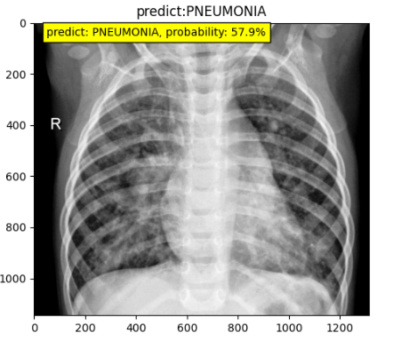
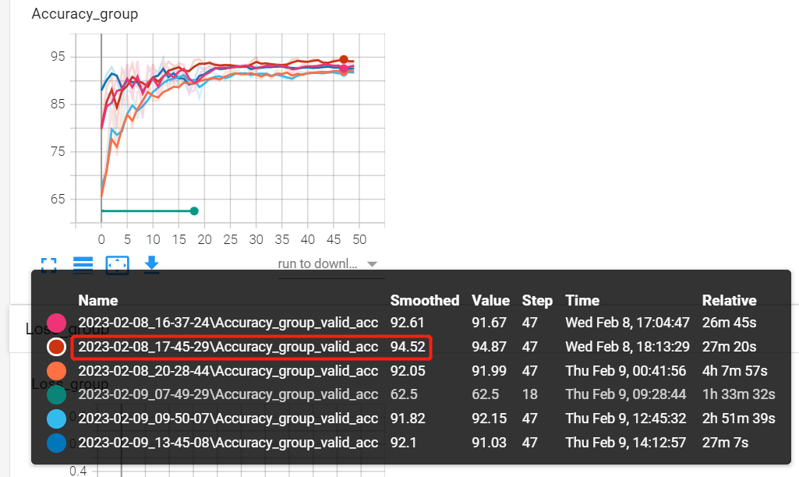

8.1 图像分类案例——胸部X光肺炎分类

前言
前言：时隔7个月，终于能有时间继续撰写本书，在这期间，生活发生了重大变化、工作内容与岗位也有不小调整，整体而言还是未来可期，接下来一段时间将开始撰写中篇，案例应用。
本案例以胸部X光片二分类任务为案例，完整的介绍图像分类任务的训练过程。其中，涉及的知识点有：
- 图片的读取与dataset的编写
- 数据增强策略消融实验：手动设置数据增强，AutoAug实验
- 基于torchvision的预训练模型使用与替换：调用resnet、convnext模型
- 完整的训练日志分析
- 模型推理代码及推理速度、吞吐量计算对比
案例的讲解不再拘泥于代码细节，而是从任务分解出发，将该案例任务划分为多个模块，并对每个模块涉及的知识点及核心代码进行讲解。
图像分类的主代码采用第七章第四节中的训练脚本实现。
数据模块
首先来看数据部分，数据通过mendeley下载，得到的是ChestXRay2017.zip压缩包，图片已经划分好训练集与验证集。
获取数据后，需要对数据基础情况进行了解，首先看目录组织形式，便于dataset的编写，目录组织形式如下：
├─test
│ ├─NORMAL
│ └─PNEUMONIA
└─train
├─NORMAL
└─PNEUMONIA
数据为jpeg格式，类型为灰度图像，长宽在600-1000像素左右。
接下来即可编写dataset，这里仍旧需要dataset的基础知识，可以快速回顾第三章 PyTorch 数据模块。
dataset配套代码。
数据加载完成后，需要做数据增强，这里可以手动根据任务背景知识进行手动设计，或者使用AutoAug中的数据增强策略。
手动设计
对于手动设计，这里给出了基于torchvision的案例与albumentations的案例，分别位于train_main.py与train_aug.py
这里要重点介绍的是albumentations的使用，需要注意的是数据normalize与totensor的地方有些不同，详情看
A.Normalize(normMean, normStd, max_pixel_value=255.), # mean, std， 基于0-1，像素值要求0-255，并通过max_pixel_value=255，来实现整体数据变换为0-1
ToTensorV2(), # 仅数据转换，不会除以255
对于pytorch，totensor是会除以255的，而albumentations是在normalize中实现除以255的操作。
AutoAug
一些任务可以套用AutoAug的策略，关于自动数据增强可以回顾第三章，在代码实现时候也需要注意将变换后的数据进行衔接，这里主要是把数据的size变换到模型接收的大小。从代码上看，autoaug可以理解为一个打包好的transform.compose，插入自定义的compose中即可。
auto_aug_list = torchvision.transforms.AutoAugment(transforms.AutoAugmentPolicy.IMAGENET)
train_transform = transforms.Compose([
auto_aug_list,
transforms.Resize(256),
transforms.RandomCrop(input_size, padding=4),
transforms.ToTensor(),
transforms.Normalize(normMean, normStd),
])
模型模块
关于模型的创建就很简单了，基于CNN的模型，可以通过torchvision直接创建，并且加载imagenet的预训练参数。
主要注意如何修改模型最后的FC层，来适应自定义任务的分类类别数。
对于提供的模型（如resnet, convnext），需要加载进来之后，debug形式的去观察模型的结构，看看最后一个FC层的定义是什么，然后针对性的修改。
例如：resnet50的是model.fc， convnext的是model.classifier[2]，这里就需要大家对第四章module的概念有较深入的理解。
训练指令
resnet50
nohup python train_aug.py --data-path ./data/chest_xray --batch-size 64 --workers 16 --lr 0.01 --lr-step-size 20 --epochs 50 --model resnet50 > ./log.log 2>&1 &
nohup python train_main.py --data-path ./data/chest_xray --batch-size 64--workers 16 --lr 0.01 --lr-step-size 20 --epochs 50 --model resnet50 > ./log.log 2>&1 &
nohup python train_aug.py --data-path ./data/chest_xray --batch-size 64 --workers 16 --lr 0.01 --lr-step-size 20 --epochs 50 --model resnet50 --autoaug > ./log.log 2>&1 &
convnext
nohup python train_aug.py --data-path ./data/chest_xray --batch-size 32 --workers 16 --lr 0.01 --lr-step-size 20 --epochs 50 --print-freq 20 --model convnext > ./log.log 2>&1 &
nohup python train_main.py --data-path ./data/chest_xray --batch-size 32 --workers 16 --lr 0.01 --lr-step-size 20 --epochs 50 --print-freq 20 --model convnext > ./log.log 2>&1 &
convnext-tiny
nohup python train_aug.py --data-path ./data/chest_xray --batch-size 32 --workers 16 --lr 0.01 --lr-step-size 20 --epochs 50 --print-freq 20 --model convnext-tiny > ./log.log 2>&1 &
nohup python train_main.py --data-path ./data/chest_xray --batch-size 64 --workers 16 --lr 0.01 --lr-step-size 20 --epochs 50 --print-freq 20 --model convnext-tiny > ./log.log 2>&1 &
训练实验记录
其它模块代码都是先前脚本中有的，就不再赘述，在本案例中，做了一些对比实验。
对比实验一：resnet50与convnext-base/tiny的比较
对比实验二：手动设计数据增强与AutoAug数据增强的比较
结论一：简单场景下，resnet50适用性更好；convnext-base与convnext-tiny在本任务差别不大；
结论二：AutoAug数据增强方法稍差些，非自然图像场景，手动设计数据增强策略效果更好；
| 模型名称 | 日志文件夹 | acc |
|---|---|---|
| convnext-tiny | 2023-02-09_09-50-07 | 92.5 |
| convnext-base | 2023-02-08_20-28-44 | 92.3 |
| resnet50 | 2023-02-08_16-37-24 | 93.8 |
| resnet50 + albumentation | 2023-02-08_17-45-29 | 94.87 |
| resnet50 + autoaug | 2023-02-09_13-45-08 | 93.3 |

模型推理与时间测试
模型训练好之后是以将模型的权重参数存储为字典形式，放在了pt文件中，在未来使用时候需要创建模型（nn.module），然后把参数加载进去，同时需要注意在推理阶段的数据前处理。
在配套代码中，实现了一张图片的推理，同时对resnet50的推理速度进行了评估，推理速度效率如下：
| 设备 | 推理速度（bs=128） | 吞吐量（bs=128） |
|---|---|---|
| GTX 1080 Ti | 5.23 ms/例0.67s ÷ 128 = 5.23 ms | 191 帧 / 秒 1 ÷ 5.23 * 1000 = 191 |
| RTX 3060 Laptop | 2.18 ms/例0.28s ÷ 128 = 2.18 ms | 459 帧 / 秒 1 ÷ 2.18 * 1000 = 459 |
| Inte i7-11800H @ 2.30GHz 八核 | 41.2 ms/例 5.27s ÷ 128 = 41.2 ms | 24.3 帧 / 秒1 ÷ 41.2 * 1000 = 24.3 |
| i7-7700 @ 3.60GHz | 101.8 ms/例 13.03s ÷ 128 = 101.8 ms | 9.8 帧 / 秒1 ÷ 101.8 * 1000 = 9.8 |
综合来看，一般的cpu可以实现实时推理，gpu推理速度是cpu的10-50倍。
PS：本次推理时间测试并不充分，不可代表实际生产下的推理效率，因此需要额外注意几个点：
- 时间测算需考虑数据前处理、后处理时间；
- 数据组batch后，可充分利用gpu资源，单位时间内推理的图片数更多，但也需要考虑组batch的时间消耗
小结
本小节通过胸部X光片的二分类场景，详细描述了从数据集读取、数据增强策略、模型finetune修改、实验对比、模型推理的各个步骤，包含代码与理论介绍。
通过本小节，应能独立实现图像分类任务。